2026
App Pernambucanas
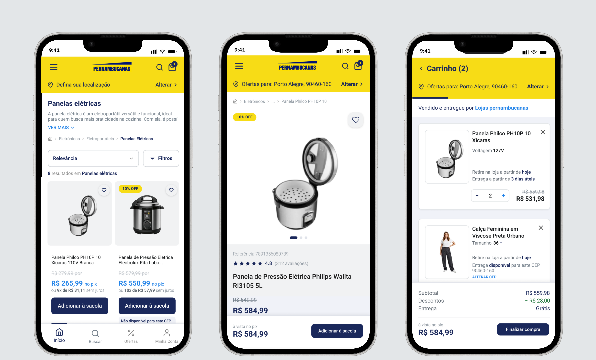
Contexto
Logo após adicionar um produto, o usuário precisava passar por uma etapa de verificação antes de continuar a compra. Após essa etapa, era levado novamente ao carrinho antes de seguir para o checkout.
Isso levantou uma dúvida: essa etapa extra era necessária ou havia outras barreiras ao longo da jornada?
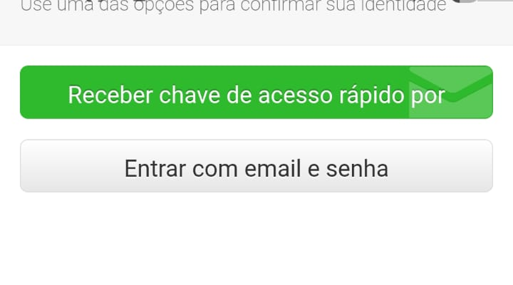
Modal de identificação ao clicar em "Ver sacola".
Meu papel
Conduzi a investigação e o processo de redesign da jornada de compra, passando pela análise do problema, pesquisa, identificação e priorização das fricções, desenho dos fluxos e definição das soluções de UX/UI.
Estratégia
Ampliei a análise para toda a jornada de compra e priorizei as fricções que mais afetavam a continuidade da compra.
Mapear as principais fricções ao longo da jornada de compra.
Priorizar os problemas que interrompiam ou dificultavam o avanço da compra.
Reduzir pontos de incerteza durante a navegação e a finalização.
Tornar informações, etapas e ações mais claras para a pessoa usuária.
Transformar os achados em decisões de UX e UI aplicáveis ao redesign.
Reviews e reclamações
Play Store + Reclame Aqui
Uso do app
Navegação e registros das telas
Benchmark
Mercado Livre · Amazon · iFood · Nubank · Renner · Tok&Stok · Magalu
Boas práticas
Baymard Institute
Observei o app e organizei os relatos reais num diagrama de afinidade, agrupando os problemas que mais se repetiam em categorias.
Usei as heurísticas de Nielsen e as diretrizes de acessibilidade do WCAG para analisar os problemas encontrados, considerando aspectos como contraste, área de toque e feedback do sistema.
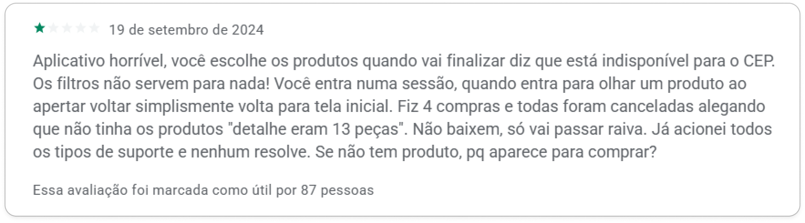
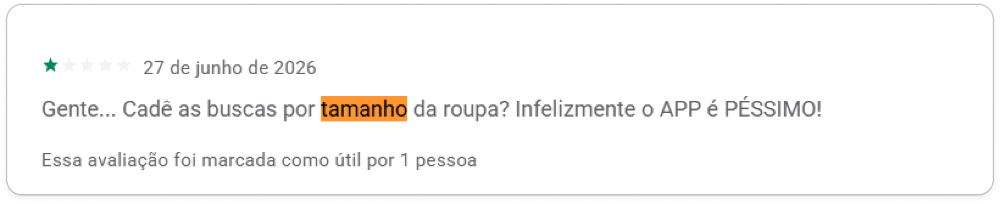
Observei o app e cruzei esses achados com os relatos dos usuários para identificar os problemas mais recorrentes.
Ao voltar da página de produto, o usuário perdia o contexto da navegação e retornava à página inicial em vez de voltar ao ponto anterior.
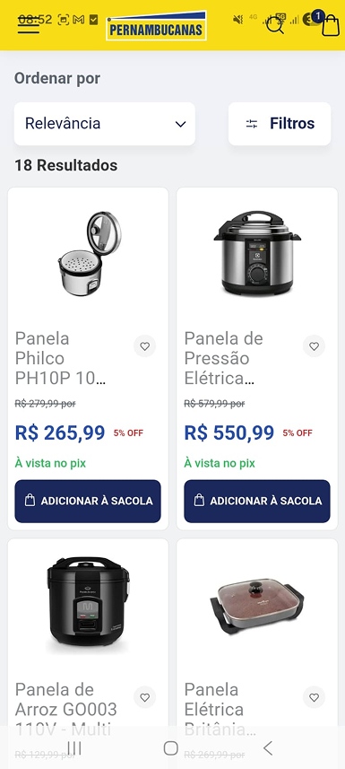
→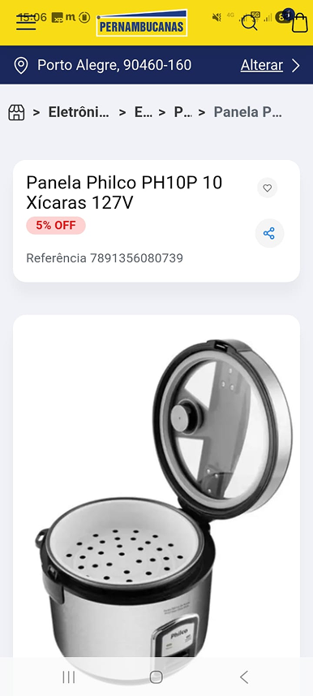
→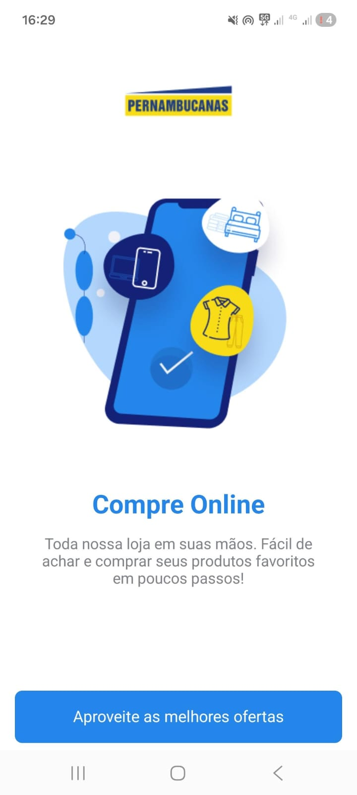
A jornada apresentava duas páginas de carrinho diferentes: uma antes da verificação e outra depois dela, criando uma etapa adicional antes do checkout.
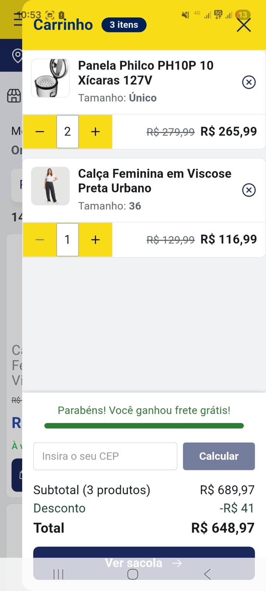
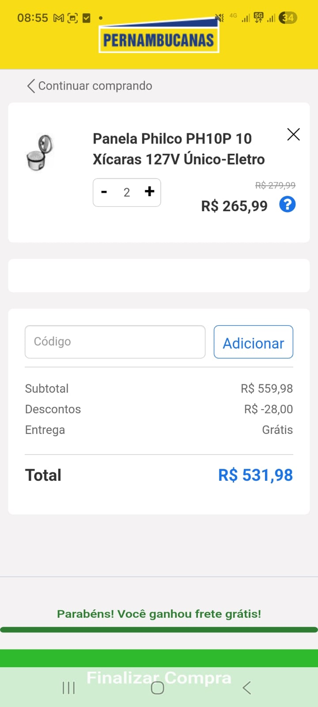
A disponibilidade por CEP só é informada depois que o produto já está no carrinho, e o aviso não recebe destaque suficiente para chamar a atenção do usuário.
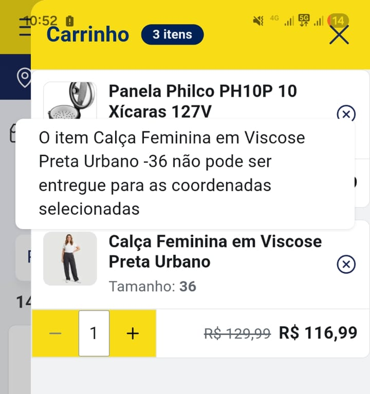
A barra do sistema se sobrepõe a elementos da interface, encobrindo ações importantes e dificultando a interação do usuário com o aplicativo.
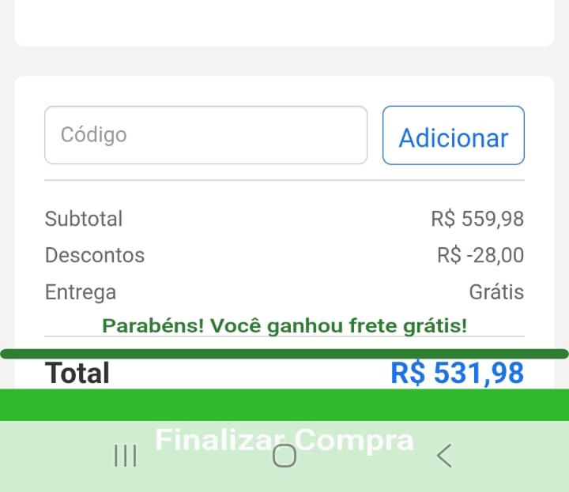
A pessoa perde o lugar ao voltar para a busca.
Encontrei relatos sobre problemas de CEP, estoque e entrega. Ao observar o app, percebi que a disponibilidade só ficava clara depois que o produto já estava no carrinho.
Na análise das telas, identifiquei elementos interativos parcialmente encobertos pela barra do sistema.
Fora do escopo: filtro de tamanho na categoria de roupa, com impacto menor que os três problemas acima.
O fluxo anterior fazia o usuário voltar ao carrinho após a verificação, adicionando uma etapa desnecessária à jornada e criando mais um ponto de interrupção antes da compra. No redesign, eliminei esse retorno para tornar a finalização mais direta.
Para evitar a perda de contexto relatada pelos usuários, mantive a posição e os filtros da busca ao retornar.
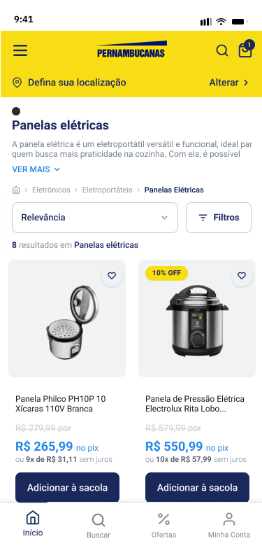
→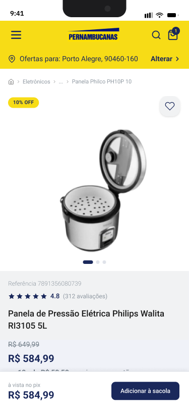
→Tornei a disponibilidade por CEP mais clara.
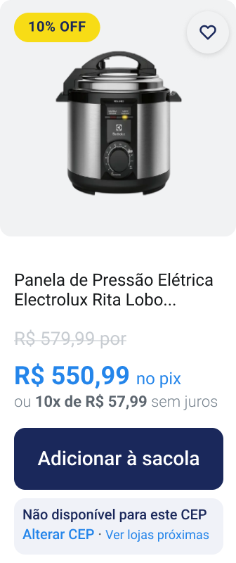
Disponibilidade no produtoCEP considerado antes da compra.
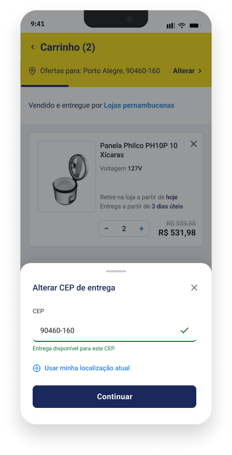
Alteração do CEP no carrinhoAtualização sem interromper a jornada.
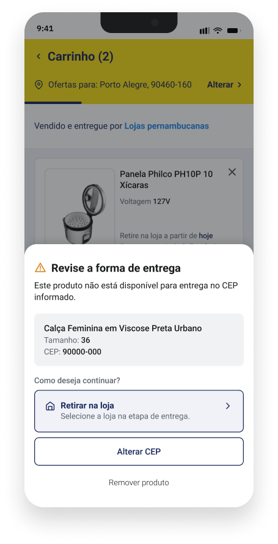
Alternativas de entregaIndisponibilidade acompanhada de opções.
O design passou a considerar a área reservada pelo sistema, mantendo ações importantes acessíveis.
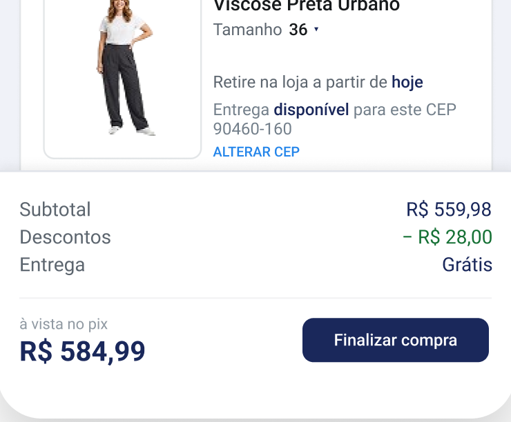
A área do sistema não é controlada pelo design, mas a solução evita que ações importantes fiquem encobertas.
Também reorganizei as cores da marca para separar identidade de ação.
Tokens
Ações principais
Adicionar à sacolaDestaques
Erro, indisponibilidade
IndisponívelConfirmação
DisponívelAlerta, atenção
Links e ações secundárias
Alterar CEPAções inativas
Adicionar à sacolaComponentes
Botão · Primary
Input · CEP
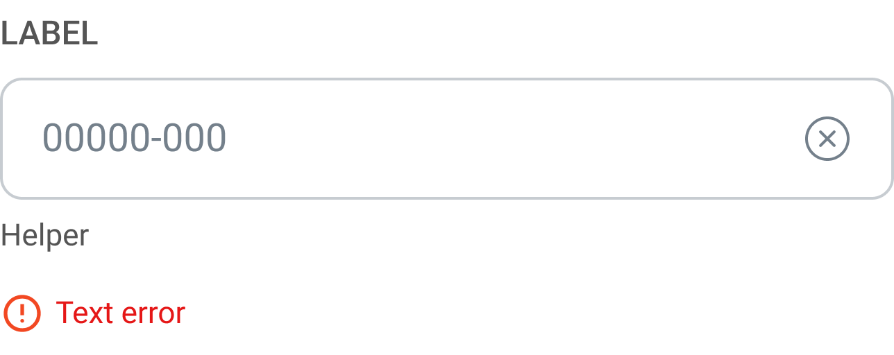
Desenvolvi as telas para que cada produto tivesse suas próprias opções de entrega ou retirada, de acordo com o CEP informado.
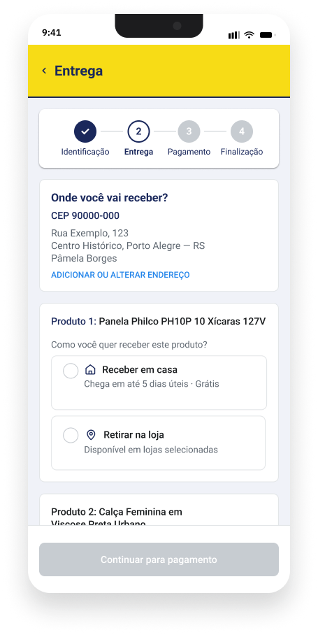
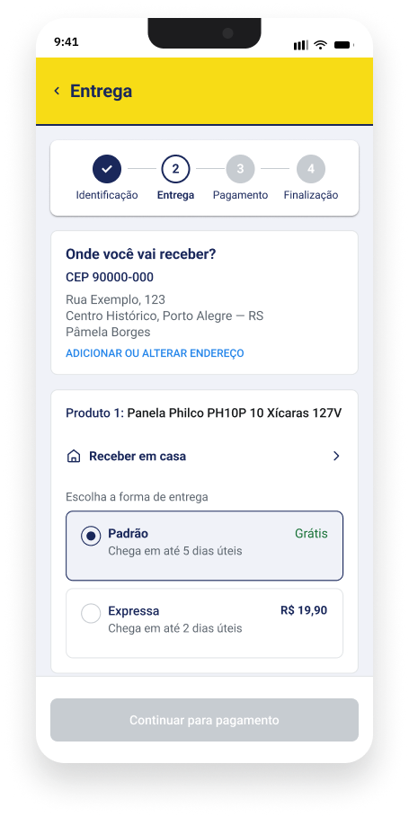
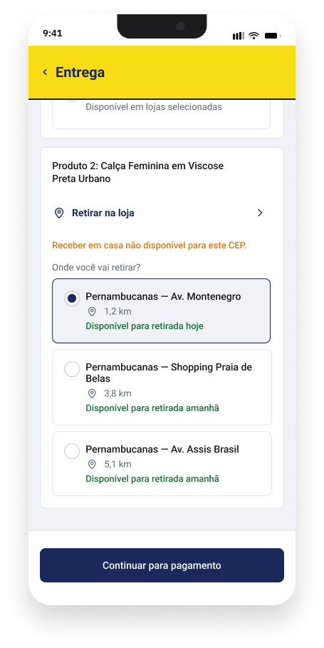
Disponibilidade no momento certo
Ao levar a verificação de CEP para o produto, percebi que uma informação que já existia no fluxo poderia evitar uma fricção se aparecesse antes.
Limites da pesquisa com dados públicos
Reviews e reclamações ajudaram a encontrar problemas recorrentes, mas algumas questões só poderiam ser confirmadas com dados internos da empresa.
Ainda preciso validar com usuários
As mudanças foram baseadas nos achados da pesquisa e na análise do app, mas ainda precisam ser testadas com usuários para entender se realmente melhoram a jornada.